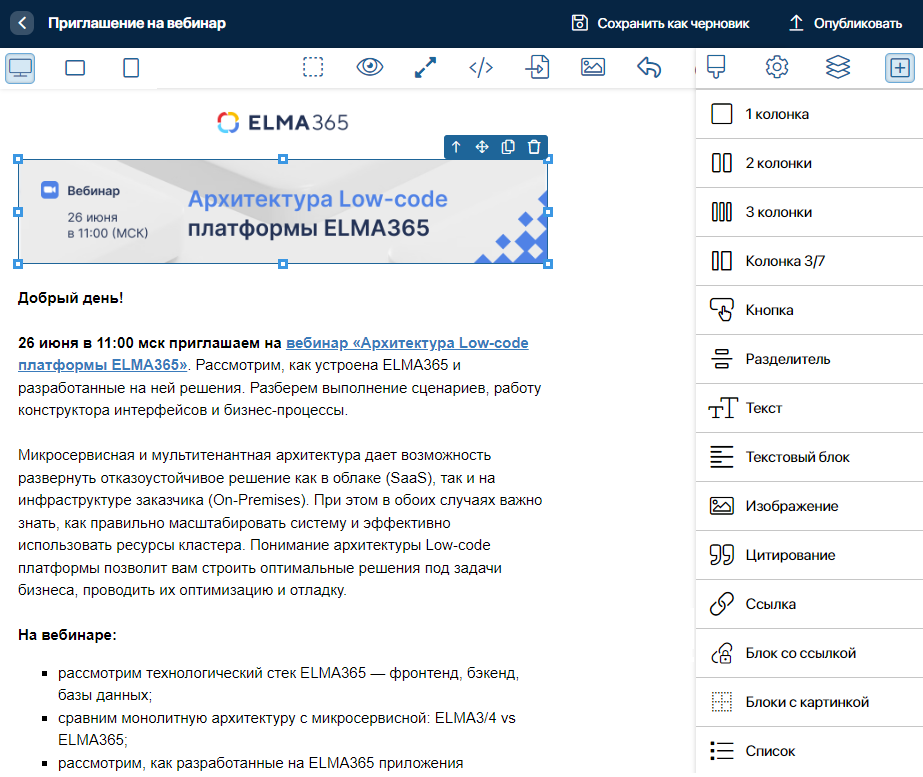

В приложении Шаблоны писем хранятся шаблоны для создания массовых и триггерных рассылок. Здесь вы можете:
- создавать и редактировать шаблоны в email-редакторе. При публикации такой шаблон сохранится в подключённом сервисе рассылок;
- импортировать шаблоны, созданные на стороне сервиса рассылок.

Перед работой с шаблонами убедитесь, что у вас подключён модуль интеграции с сервисом рассылки.
При использовании сервиса Unisender дополнительной настройки не требуется. Если подключён другой сервис рассылок, в нём должны быть реализованы следующие методы:
CRM_Marketing_SetTemplateHTML— для сохранения на стороне сервиса шаблонов, созданных в системе;CRM_Marketing_ImportTemplates— для импорта шаблонов из сервиса рассылок.
Подробнее о настройке интеграции с другим сервисом рассылок читайте в справке ELMA365 TS SDK.
Создать шаблон
В приложении Шаблоны писем используется встроенный графический email-редактор для создания шаблонов. Чтобы добавить шаблон:
- На странице приложения в правом верхнем углу нажмите кнопку + Шаблон.
- В открывшемся окне укажите название шаблона и выберите подключённый сервис рассылки.

- Нажмите Сохранить. После этого карточка шаблона добавится в приложение со статусом Черновик и откроется редактор шаблонов.
- Сформируйте содержание нового шаблона в email-редакторе. Для этого перенесите с боковой панели нужные блоки: колонки, текст, изображения, кнопки и ссылки. Затем оформите содержание, используя редактор стилей, настройки компонентов и другие инструменты. Подробнее об этом читайте в статье «Редактор шаблонов».

- Сохраните шаблон. Для этого в правом верхнем углу редактора выберите:
- Сохранить как черновик — присвоить шаблону статус Черновик. Такой шаблон нельзя использовать в настройках рассылки;
- Опубликовать — сохранить карточку шаблона со статусом Опубликован. Такой шаблон автоматически сохранится в сервисе рассылок и его можно выбрать в настройках создания массовой или триггерной рассылки.
Импортировать шаблоны
В приложение Шаблоны писем можно добавить все шаблоны из вашего аккаунта в подключённом сервисе рассылки. Для этого на странице приложения в правом верхнем углу нажмите значок три точки и затем нажмите появившуюся кнопку Импортировать шаблоны.
Загруженный шаблон сохранится со статусом Опубликован и станет доступен для выбора в настройках создания массовой или триггерной рассылки.
О том, как создавать шаблоны на стороне сервиса рассылки, читайте в официальной документации подключённого сервиса.
Карточка шаблона
Чтобы просмотреть шаблон, выберите его в списке элементов на странице приложения. В карточке вы увидите содержание шаблона, а также его статус:
- Черновик — шаблон недоступен для выбора в настройках рассылок;
- Опубликован — шаблон сохранён на стороне подключённого сервиса рассылок и его можно привязать к массовой или триггерной рассылке.

Вы можете открыть шаблон с любым статусом в email-редакторе, чтобы изменить его содержание. Для этого внизу карточки нажмите Редактировать.
Изменить шаблон на стороне сервиса
Вы можете отредактировать шаблон на стороне сервиса Unisender, Unisender Go или Sendsay. При использовании другого сервиса рассылки изменить шаблон можно, если сервис поддерживает эту функцию, и она реализована в пользовательском модуле интеграции.
Рассмотрим пример работы с шаблоном в личном кабинете сервиса Unisender:
- Откройте раздел Рассылки и на вкладке Мои шаблоны выберите шаблон для изменения.

- Отредактируйте шаблон и сохраните изменения.
- Вернитесь в ELMA365 и повторно выполните импорт шаблонов. При этом существующие шаблоны обновятся.
Персонализация шаблона
Вы можете персонализировать рассылки, т. е. настроить подстановку данных о подписчиках в шаблоны писем на стороне подключённого сервиса рассылок.
В качестве данных используются поля карточки контакта из ELMA365, которые заданы в настройках модуля интеграции с сервисом рассылок. Добавьте эти данные в шаблоны, используя редактор шаблонов. Также можно изменить шаблон на стороне сервиса рассылок и затем импортировать.
Если вы используете сервис Unisender, в нём по умолчанию создана переменная Name, которую можно использовать в шаблонах. Из ELMA365 в эту переменную будет автоматически передаваться имя подписчика из приложения Контакты. Если на стороне Unisender созданы дополнительные переменные, вы можете соотнести их со свойствами приложения Контакты в настройках модуля. Это позволит добавлять в шаблон письма и другие данные о подписчике: должность, контактные данные, наименование компании и т. д.
Если у вас подключён сервис Unisender Go или Sendsay, в настройках модуля интеграции выберите нужные поля карточки контакта из ELMA365 и укажите тег для каждого поля. Затем добавьте теги в шаблоны писем. Так, в редакторе шаблонов при работе с текстом используйте функцию персонализации и выберите нужное поле контакта. В текст шаблона подставится соответствующий ему тег.
При использовании другого сервиса рассылки персонализировать шаблон можно, если сервис поддерживает эту функцию и она реализована в пользовательском модуле интеграции.